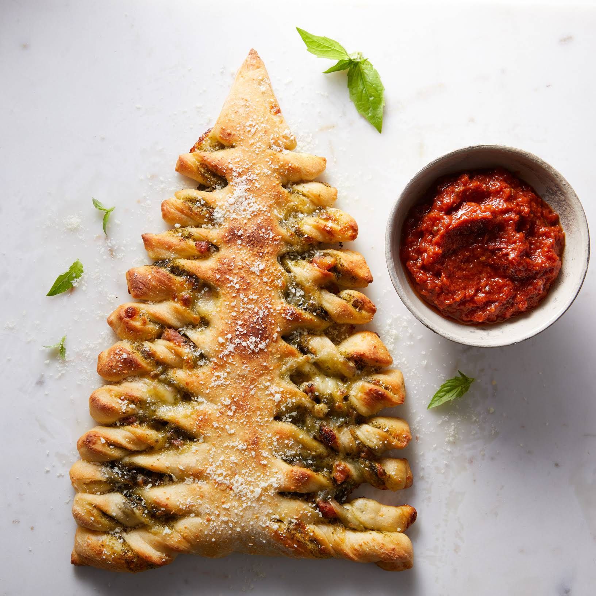

Christmas Tree Pull-Apart Pizza Bread

This festive, delightfully retro holiday bread starts with store-bought pizza dough, which means you can have all the fun of shaping it with very little hands-on time. Serve the stuffed pizza as a holiday party appetizer, or make a main dish out of it with a big green salad. The bread reheats beautifully if you want to make it a day ahead. The recipe is a Yummly original created by Tracey Seaman.
Ingredients
- 3 Tbsp. finely grated Parmesan Reggiano cheese (for dough)
- 16 oz. pizza dough (thawed if frozen; 1 ball is 16 oz.)
- 4 oz. diced pancetta (or bacon)
- 3 Tbsp. pesto sauce (thick)
- 3 oz. shredded mozzarella cheese (about 3/4 cup packed)
- 1 Tbsp. finely grated Parmesan Reggiano cheese (for top of dough)
- freshly ground black pepper
Steps
- Sprinkle the Cheese on a Large Cutting Board or Kitchen Counter. Place the Dough on Top of Cheese and Knead a Few Times to Warm Dough and Incorporate the Cheese. Let Dough Rest for About 10 Minutes.
- Partially Cook the Pancetta in a Small Frying Pan Over Medium Heat, Stirring and Turning Occasionally, Until Lightly Golden, About 4 Minutes. Transfer to a Paper Towel-Lined Plate and Let Cool.
- Preheat the Oven to 400°F.
- On a Cutting Board or Counter, Roll the Dough to a 9x13-Inch Rectangle. Cut a 9x13-Inch Center Triangle with Two Smaller Side Triangles. Line Two Baking Sheets with Parchment Paper. Transfer the Large Center Dough Triangle to One Pan. if the Triangle Shrinks While Moving, Use Your Fingers to Gently Stretch It Out to 9 Inches at the Base and 13 Inches Tall.
- Spoon the Pesto Onto the Large Dough Triangle and Spread with the Back of a Spoon to Evenly Cover Dough, Leaving a 1/2-Inch Border All Around. Sprinkle the Cooked Pancetta, Mozzarella, and Parmesan on Top. Season with Pepper and Set Aside.
- On the Other Prepared Baking Sheet, Set the Smaller Dough Triangles Side by Side, Overlapping Slightly in the Center to Create a Triangle About the Same Size as the First. Press Pieces to Join. Gently Roll Up the Dough on a Rolling Pin, and Then Unroll It on Top of the Dough with the Toppings. Press Along the Edges to Seal, Stretching the Dough Gently to Fit as Needed.
- Place a Piece of Parchment Paper on Top of the Stuffed Dough. Invert the Second Baking Sheet on Top of Stuffed Dough. Flip Pans So the Seam Side Is Down. Peel Off the Parchment on Top.
- Think of the Triangle as Having a 1 1/2-Inch-Wide "Trunk" Running Up the Middle, From the Base to the Pointed Top. Be Careful Not to Cut Into This Area. Using a Pizza Cutter or Knife and Starting on the Bottom of One Side of the Triangle, Begin Making Horizontal Cuts About 3/4 Inch Wide From the Trunk Out to the Edge. Continue to About Halfway Up the "Trunk", and Repeat on the Other Side of the Triangle. Continue Making the Same Width Cuts From the Middle to the Top of the "Trunk" on Both Sides, Stopping About 2 Inches From the Point. Twist Each Strip of Dough Two or Three Times and Lay Back Down in Its Original Spot. When Finished, the Triangle Will Resemble a Christmas Tree.
- Bake the Tree on Middle Rack of Oven Until Nicely Golden, About 20 Minutes. Check Tree Occasionally as It Bakes, and if Any Part Starts to Brown Faster Than the Rest, Tent That Section with a Small Piece of Foil.
- Check to See That Bread Is Done. Remove From Oven or Add Time as Needed.
- Set Baking Sheet on a Cooling Rack and Let Bread Cool for About 20 Minutes. with Two Wide Metal Spatulas, Transfer Bread to a Serving Board or Platter and Serve Warm. if Making the Bread Ahead, Let It Cool Completely, Then Wrap Airtight in Foil and Refrigerate for Up to 24 Hours. to Serve, Reheat Bread Uncovered on a Baking Sheet in a 325°F Oven Until Heated Through.